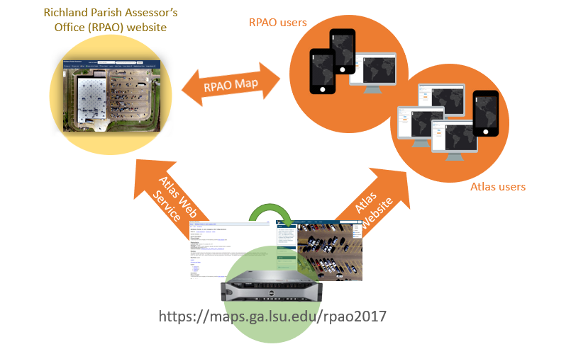

Web GIS Infrastructure
Table of Contents
Terms: server, client, data center, cloud computing, IaaS, SaaS
Introduction
The previous lesson covered general concepts that apply not only to Web GIS but the web in general. We will now focus on the components of a typical web-based geographic information system. It is a peek under the hood of the Web GIS machine so that when you build web maps later or encounter them outside of this course you will have a basic understanding of how it all works.
Keep in mind that architectures and specific configurations will change as Web GIS evolves. The technical details provided in this lesson should be taken as tangible examples of recent and current practices, but they could change.
Servers and the cloud
Since the terms “server” and “application” were prominent in Part 1 of this lesson, let us look closer at what they are, where they are, and what they do.
Put simply, servers are computers and software that provide (serve) resources to other computers. The computers and software that request and receive resources from servers are clients. Any computer can be a client; a server can act as a client if it is consuming resources from another server. In turn, any computer can be a server. You could configure a laptop as a web server if you wanted to. But in practice, servers are built with specialized hardware meant for high performance and constant use.
Note a “server” might not always be a physical piece of computer hardware. “Server” could refer to an application or a virtual machine, rather than the physical hardware. Physical servers are introduced here first, though virtualized servers are more common in cloud computing.
Servers are typically housed in a data center with adequate cooling, fire protection, redundant power, and physical security. Data centers are often located in places geographically close to the intended audience to improve speed. Amazon has AWS data centers concentrated on the east and west coasts of North America and across Europe and East Asia, but isolated data centers in smaller markets in Africa, Australia, and South America.
 Figure 1. Servers manufactured by Dell, installed in racks in a cabinet (left) and a row of cabinets (right) in the LSU data center. These physical servers host virtual machines that run software for websites and web GIS applications.
Figure 1. Servers manufactured by Dell, installed in racks in a cabinet (left) and a row of cabinets (right) in the LSU data center. These physical servers host virtual machines that run software for websites and web GIS applications.
 Figure 2. Racks of servers in a Google data center in Oklahoma. Source: Google.
Figure 2. Racks of servers in a Google data center in Oklahoma. Source: Google.
As an example of a client and server, take a browser and website. If you visit the website https://atlas.ga.lsu.edu, your browser’s request is routed through the Internet to one of the servers pictured in Figure 1. The web server application (Apache) installed on the server responds to your browser by sending the webpage. Similarly, when you perform a Google search, your request is routed to applications running on servers in Google’s data centers (Figure 2). In both cases, the client browser requests a resource from a server, and the server sends the resource in response.
In modern computing, it is common for server applications to be distributed across a network of servers, which could be in different data centers in different regions of the world. The servers work together, distributing tasks to different servers as needed depending on traffic and location. Using Google Search as an example again, all Google searches globally are not handled by a single server. Searches by users in North America will be sent to Google’s North American data centers, files stored on Google Drive by users in Europe will be stored in European data centers, and so on. The number of servers or amount of computing resources allocated to an application will depend on demand: during times of high traffic to Google Search, more servers can be automatically assigned to it, while during high usage of Google Maps, servers can be re-assigned to Maps. All of this is invisible to users. We use websites or apps without having to know (or care) which server resources are assigned to it. This is cloud computing, where networked computing resources work in cooperation to make software available to users as a service on the web.
Cloud computing is a useful model for applications that must be highly available (24/7 with no downtime) and highly scalable (able to handle heavy traffic and sudden spikes in usage). It can be expensive for organizations, much less individuals, to set up and manage their own cloud infrastructure, so it often makes sense to use cloud services provided by a third party.
The kind of cloud computing model you probably use most often is Software as a Service (SaaS): web-based applications hosted and managed by a provider in cloud computing environment. This includes Microsoft Office 365 for your school or work email or ArcGIS Online for the cloud GIS we will use in this course. SaaS does not involve maintaining your own hardware or even installing your own software. Those matters are taken care of by the service provider. You simply sign into a website or app and use it.
Another cloud computing model worth mentioning is Infrastructure as a Service (IaaS): a cloud computing environment where users can install and manage their own operating systems and applications in virtual machines, while the provider manages the underlying hardware, networking, virtualization software, and other aspects of the cloud computing environment. Users have more control of their applications but incur the costs of managing the applications themselves. They also avoid the costs of purchasing and managing the underlying infrastructure while still enjoying the speed and availability of a global cloud infrastructure.
Amazon Web Services (AWS) and Microsoft Azure are examples of IaaS. Esri uses AWS to host ArcGIS Online. Esri essentially rents out Amazon’s cloud infrastructure to run ArcGIS Online, which Esri then turns around and offers as a SaaS. Esri saves themselves the cost of managing their own global cloud while still retaining complete control over their application, ArcGIS Online.
To set up any Web GIS infrastructure, you could either buy your own server hardware and house it on-premises in your organization’s data center, or use IaaS cloud computing, which gives access to servers to install Web GIS applications. The decision to use an on-premises or IaaS solution should be made based on the costs of maintaining everything yourself versus the costs of paying a third-party service. This varies by organization, depending on existing facilities (do you already have a data center?), expertise (do you already have IT staff?), and other organizational requirements.
For many users, particularly individuals or small organizations, it will make the most sense to go with a SaaS solution for Web GIS, where you worry about neither software nor infrastructure, and instead focus on using the software. The specifics of cloud computing and server architecture are of little consequence to these users.
Although we will use ArcGIS Online in this course, making us care-free SaaS users, this lesson will still take a look at how Web GIS works to help you understand what is happening behind the scenes when you use ArcGIS Online. The diagrams below should give an idea of some of the applications involved if you were to configure your own Web GIS servers.
Recall the client-server model, where a client (web browser) downloads a webpage from a web server. For a simple webpage like https://atlas.ga.lsu.edu with no web maps, the diagram has only the client and the server (Figure 3).
 Figure 3. A client web browser requests the website https://atlas.ga.lsu.edu and the server responds with the homepage.
Figure 3. A client web browser requests the website https://atlas.ga.lsu.edu and the server responds with the homepage.
How would the diagram change with Web GIS using web services, based on what we have covered so far regarding web services? If you display your data and maps on your own website, but have also opened up your map data for public use through web services, it is possible that third-party apps and websites will display your data. This means users might not use your website to view your data, instead using the third-party app that takes advantage of your web services.
 Figure 4. Your Web GIS providing public web services in addition to a website. If third parties take advantage of the web services, then the audience will have a choice in how to use your data, either through your own website or a different site/app.
Figure 4. Your Web GIS providing public web services in addition to a website. If third parties take advantage of the web services, then the audience will have a choice in how to use your data, either through your own website or a different site/app.
The next figure shows this concept in action. Atlas is a website to download GIS datasets for Louisiana, and it offers some of those datasets as web services as well. High-resolution imagery of towns in Richland Parish is one of the datasets available on Atlas as a web service. The web service is used to show the imagery on the Atlas website, but the same web service is also used by the Richland Parish Assessor’s Office (RPAO) website to show the imagery on their web maps. People looking at the imagery on the RPAO website are actually receiving the data from an Atlas server, through a web service. In this way, it is possible for a data provider to open up their layers for use in third-party applications.
 Figure 5. A web service being used by two websites. The web service for 3-inch aerial imagery of towns in Richland Parish is consumed by the Atlas website and the Richland Parish Assessor’s Office website. If an update is made to the web service, the change will be automatically reflected in any website/app using the service.
A more widely seen example would be the Google Maps street and satellite basemaps. You can see them on the Google Maps website and app, but many third-party websites and apps use the familiar Google Maps street and satellite views in their own apps, which is possible through web services.
In either case, the third parties aren’t burdened by having to maintain copies of these datasets; their applications simply connect to the provider’s web service and the data is brought into their application. When the data provider updates their datasets, e.g., Google adds new satellite imagery for your neighborhood, the updates will be reflected automatically in all third-party apps.
Web GIS servers
If we focus on the Web GIS component of the previous figures in more detail, it can be broken down into three servers or applications. The figure below illustrates a typical Web GIS configuration with three servers:
- Web server - listens for requests from clients and sends responses
- GIS server - runs web services that provide the data used in maps
- Data store - holds files and databases containing the data that is served through the GIS server’s web services
These three applications could be installed on the same server (typically in Windows or Linux) or on separate servers. Regardless, communication flows from web server to GIS server to data store, then back from data store to GIS server to web server.
 Figure 6. A Web GIS infrastructure with three servers. The web server communicates with public clients and the internal GIS server, which hosts web services. These web services pull their data from the data store.
Figure 6. A Web GIS infrastructure with three servers. The web server communicates with public clients and the internal GIS server, which hosts web services. These web services pull their data from the data store.
Requests from clients on the web go to the web server, which acts as a gateway and determines what needs to be sent back to clients in the response (e.g., a state boundary layer, a satellite imagery layer, etc.). Based on this determination, the web server will query the web services on the GIS server. The GIS server can then pull the appropriate data from the data store (e.g., if the requested map view is zoomed to a small area, only send the satellite images covering that specific area). From there, the requested data is sent back up the chain, from the data store to the GIS server on to the web server and ultimately to the client. Figure 6 shows arrows pointing in both directions, indicating that data can flow in and out of the system; clients may be able to upload new data as well as download.
It should be noted that a system might include more servers to handle more traffic or more computing power. For example, an additional GIS server could be added to handle requests for data processing while the first server continues to handle requests for maps.
To demonstrate what a request to a Web GIS server looks like in practice, the figure below shows data layers requested when viewing the lidar elevation map at https://maps.ga.lsu.edu/lidar2000. There is a layer of gridlines representing the footprint of each lidar image on the map, a parish boundary layer, and the lidar imagery layer. These three layers are pulled from the data store and transmitted through the GIS server’s web services and the web server to the client’s web browser for display.
 Figure 7. Server components (green) involved in providing a web map on https://maps.ga.lsu.edu/lidar2000. Client web browsers (orange) request the webpage containing the map, the web server relays the request to the GIS server, and the GIS server figures out which data layers are needed from the data store. The response is passed back through the web server to the client, where the web browser assembles the text, graphics, etc. to display the map.
Figure 7. Server components (green) involved in providing a web map on https://maps.ga.lsu.edu/lidar2000. Client web browsers (orange) request the webpage containing the map, the web server relays the request to the GIS server, and the GIS server figures out which data layers are needed from the data store. The response is passed back through the web server to the client, where the web browser assembles the text, graphics, etc. to display the map.
Web GIS software
The figures below show the names of specific applications that can be used to build a Web GIS.
ArcGIS Enterprise is a set of applications that you can install on your own servers to essentially reproduce the functionality of ArcGIS Online. The web server application (ArcGIS Portal) runs the website interface that users interact with, ArcGIS Server hosts web services for map layers, and Data Store manages the database containing the data behind the web services.
 Figure 8. The ArcGIS software suite for Web GIS, known as ArcGIS Enterprise, includes ArcGIS Data Store, Server, and Portal. ArcGIS icons from “Getting to Know Web GIS, 3rd Edition”.
Figure 8. The ArcGIS software suite for Web GIS, known as ArcGIS Enterprise, includes ArcGIS Data Store, Server, and Portal. ArcGIS icons from “Getting to Know Web GIS, 3rd Edition”.
Following the same web server, GIS server, and data store model, a free open-source software stack can be used to create your own web GIS services (Figure 9). Installing GeoServer will install a web server application (Jetty) and the GeoServer GIS server, which can then connect to an open-source database such as PostgreSQL.
 Figure 9. Free, open-source software can work together to build a Web GIS, namely Jetty web server, GeoServer GIS server, and PostgreSQL database.
Figure 9. Free, open-source software can work together to build a Web GIS, namely Jetty web server, GeoServer GIS server, and PostgreSQL database.
Summary
In current practice, web-based geographic information systems generally consist of three major components: a data store, a GIS server application, and a web server. These core components can deliver your data via web services to your websites and apps, or to third parties.
Web GIS software can be set up in a variety of environments, from a computer in your office to a globally distributed cloud computing network. Regardless of specific software and hardware configurations, at least one characteristic of Web GIS is likely to endure as the technology evolves: web services. The ability to link applications and share data layers makes web services a valuable component of Web GIS.
End of Module Questions
Think back on Assignment 1, where you created a map in ArcGIS Online, and relate that to the concepts and diagrams in the Module 1 lessons. Use this to evaluate your understanding of the material.
- When you use your laptop, desktop, or phone to view your Assignment 1 map, what client software is being used?
- Is there a server involved when your map is viewed?
- Is your map using web services, and if so, what do they do?
- Does your map show images, points, lines, or polygon layers?
- Did your layers have attributes? If so, what are the attribute names?
Back to Lessons